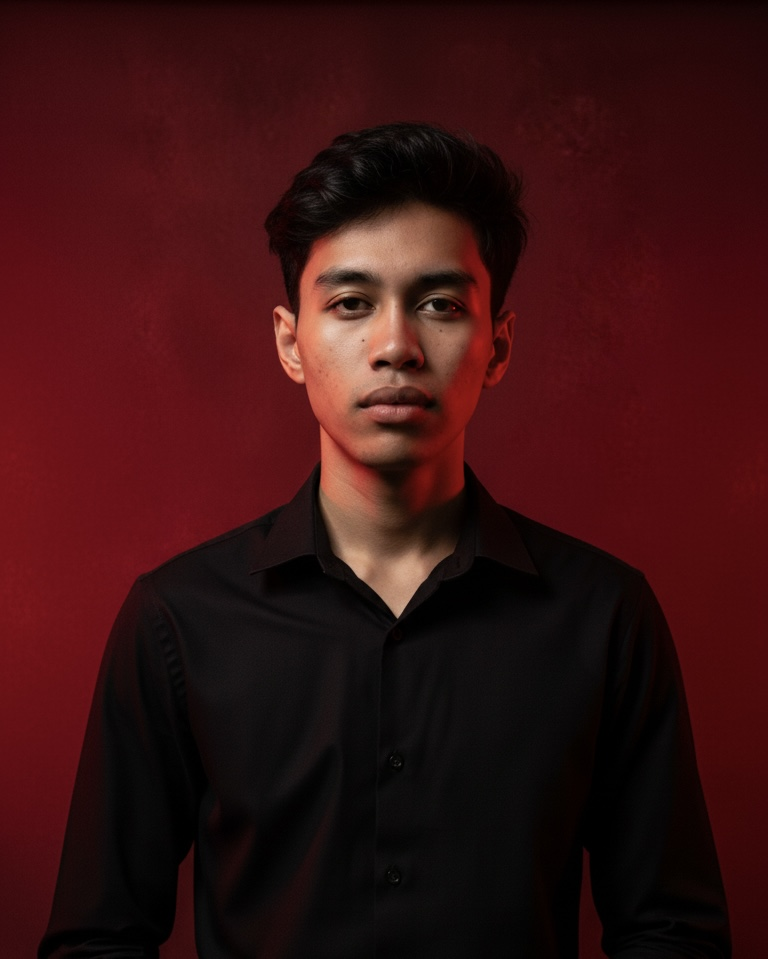
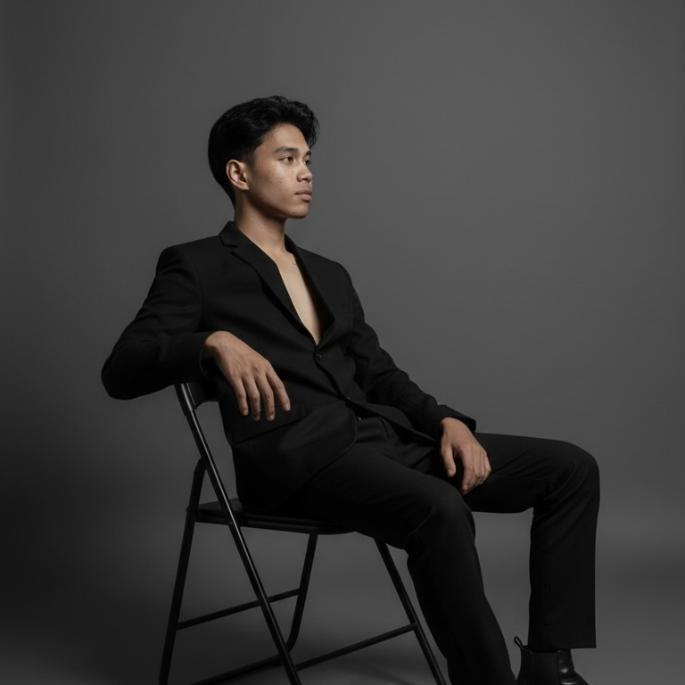
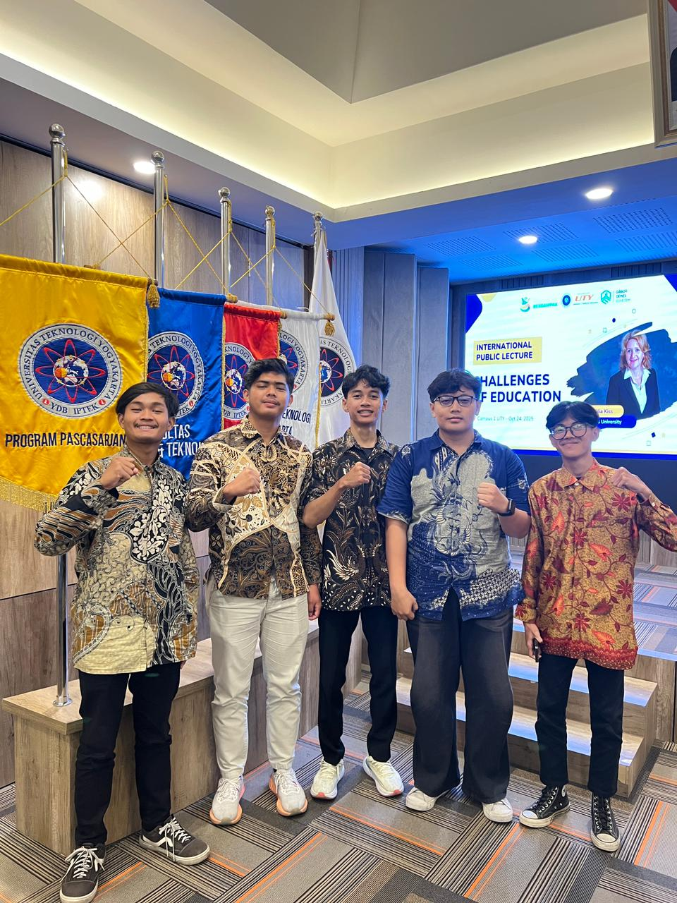

About Me
Wildan Akmal
Undergraduated Student
Mahasiswa Universitas Teknologi Yogyakarta, jurusan Informatika semester 3 yang memiliki kemampuan dalam mendesain website, dengan pengalaman yang cukup memadai, selama kuliah saya dapat memecahkan masalah nyata dengan teknologi. Saya kadang mengikuti seminar maupun webinar untuk menambah pengalaman. Saya juga suka mengikuti kegiatan di alam bebas agar dapat mengasah skill survival saya.
📍 Trihanggo, Sleman, Yogyakarta

Personal Skills
Pemrograman
Menganalisis data
Ms Office
Bahasa Inggris
Mengelola waktu
Editing
Berdiskusi
Desain grafis
Survival
📍 Trihanggo, Sleman, Yogyakarta

Pendidikan & Pengalaman
Pendidikan
(Sep 2016 - Present)
- SD 2 Temanggung II (2012 - 2018)
- SMP 2 Temanggung (2018 - 2021)
- SMA 3 Temanggung (2021 - 2024)
- Universitas Teknologi Yogyakarta (2024 - Now)
Pengalaman
(2021 - Now)
- Peserta OSN Astronomi tingkat kabupaten (2023)
- Mengembangkan prototipe antarmuka website menggunakan HTML, CSS, dan JavaScript untuk tugas akhir mata kuliah.
- Menyelesaikan webinar online "Full Stack Web Development (Dasar)"
- Anggota Mapala UTY (2024 - Now)
📍 Trihanggo, Sleman, Yogyakarta
